油・竜シリーズ をドロップするmob一覧
一覧ページへ
※能力向上2が該当。
| ミイラ | アンデット | 一般2 | |||||||
|---|---|---|---|---|---|---|---|---|---|
 | 槍(380) | 杖(250) | 状態異常回復1(380) | 腰(210) | 手首(190) | 能力向上2(150) | 本(250) | 箒(380) | |
| 包帯人間 | アンデット | 一般3 | |||||||
| 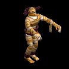 | 槍(360) | 杖(240) | 矢(360) | 腰(200) | 手首(180) | 能力向上2(140) | 本(240) | 箒(360) | 魔弾(360) |
| エンバームド | アンデット | 一般4 | |||||||
 | 槍(300) | 鞭(200) | 状態異常回復1(300) | 腰(170) | 手首(150) | 能力向上2(120) | 箒(300) | ||
| マミー | アンデット | セミ1 | |||||||
 | 槍(390) | 杖(260) | 状態異常回復1(390) | 腰(220) | 手首(200) | 能力向上2(160) | 本(260) | 箒(390) | |
| マミーキング | アンデット | ボス1 | |||||||
 | 槍(470) | 鞭(310) | 状態異常回復1(470) | 腰(260) | 手首(240) | 能力向上2(190) | 箒(470) | ||
| 幻想鎧 | アンデット | ボス1 | |||||||
 | 弓(470) | 両手剣(310) | 盾(470) | 鎧(260) | 手首(240) | 能力向上2(190) | 鎌(310) | 銃(470) | |
| ストラグラー | 人間 | 一般1 | |||||||
 | 杖(410) | スリング(270) | 弾(410) | 腰(230) | 首(210) | 能力向上2(160) | 本(410) | ||
| 堕落魔法師 | 人間 | 一般3 | |||||||
 | 杖(360) | スリング(240) | イベント(360) | マント(200) | 首(180) | 能力向上2(140) | 本(360) | ||
| ソーサラー | 人間 | セミ1 | |||||||
 | 杖(390) | スリング(260) | 状態異常回復2(100) | 職業鎧(220) | 首(200) | 能力向上2(160) | 本(390) | ||
| ドゥームキャスター | 人間 | ボス1 | |||||||
| 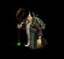 | 杖(470) | スリング(310) | 弾(470) | 兜・帽子(260) | 首(240) | 能力向上2(190) | 本(470) | ||
| リザードライダー | 悪魔 | 一般2 | |||||||
 | スリング(380) | 槍(250) | イベント(380) | 職業鎧(210) | 首(190) | 能力向上2(150) | 箒(250) | ||
| リザードチャージ | 悪魔 | 一般3 | |||||||
| 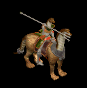 | ステッキ(360) | 槍(240) | イベント(360) | 職業鎧(200) | 首(180) | 能力向上2(140) | 箒(240) | ||
| リザードトルーパ | 悪魔 | 一般4 | |||||||
 | ステッキ(300) | 弓(200) | 矢(300) | 職業鎧(170) | 首(150) | 能力向上2(120) | 銃(200) | 魔弾(300) | |
| ナーガナイト | 悪魔 | セミ2 | |||||||
 | ステッキ(420) | 弓(280) | HP回復(420) | 職業鎧(230) | 首(210) | 能力向上2(170) | 銃(280) | ||
| ナーガランサー | 悪魔 | ボス2 | |||||||
 | スリング(490) | 弓(330) | 矢(490) | 職業鎧(270) | 首(250) | 能力向上2(200) | 銃(330) | 魔弾(490) | |
| ラットシーフ | 悪魔 | 一般4 | |||||||
 | 投擲(300) | ステッキ(200) | 矢(300) | 足(170) | 槍投擲機(150) | 能力向上2(120) | 魔弾(300) | ||
| ストーントルド | 悪魔 | セミ3 | |||||||
 | none(450) | 鈍器(300) | 盾(450) | 腰(250) | 手首(230) | 能力向上2(180) | |||
| 淡水亀 | 動物 | 一般1 | |||||||
 | ステッキ(410) | 杖(270) | 盾(410) | 鎧(230) | 冠(210) | 能力向上2(160) | 本(270) | ||
| ヒュージタートル | 動物 | 一般2 | |||||||
 | ステッキ(380) | 杖(250) | 状態異常回復2(100) | 鎧(210) | 冠(190) | 能力向上2(150) | 本(250) | ||
| ビッグシェル | 動物 | 一般3 | |||||||
 | ステッキ(360) | 杖(240) | 盾(360) | 鎧(200) | 冠(180) | 能力向上2(140) | 本(240) | ||
| トライアングル | 動物 | セミ1 | |||||||
| 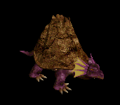 | ステッキ(390) | 杖(260) | cP回復(390) | 鎧(220) | 冠(200) | 能力向上2(160) | 本(260) | ||
| タートルドラゴン | 動物 | ボス1 | |||||||
 | ステッキ(470) | 杖(310) | 盾(470) | 鎧(260) | 冠(240) | 能力向上2(190) | 本(310) | ||
| 水晶烏賊 | 動物 | セミ1 | |||||||
| 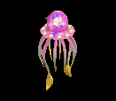 | 鞭(390) | スリング(260) | 弾(390) | 腰(220) | 手首(200) | 能力向上2(160) | |||
| ビッグクラブ | 動物 | 一般2 | |||||||
 | 投擲(380) | 両手剣(250) | 状態異常回復1(380) | 足(210) | 指輪(190) | 能力向上2(150) | 鎌(250) | ||
| ミイラEx | アンデット | 一般2 | |||||||
| 槍(380) | 杖(250) | 状態異常回復1(380) | 腰(210) | 手首(190) | 能力向上2(150) | 本(250) | 箒(380) | |
| 包帯人間Ex | アンデット | 一般3 | |||||||
| 槍(360) | 杖(240) | 矢(360) | 腰(200) | 手首(180) | 能力向上2(140) | 本(240) | 箒(360) | 魔弾(360) | |
| エンバームドEx | アンデット | 一般4 | |||||||
| 槍(300) | 鞭(200) | 状態異常回復1(300) | 腰(170) | 手首(150) | 能力向上2(120) | 箒(300) | ||
| マミーEx | アンデット | セミ1 | |||||||
| 槍(450) | 杖(300) | 状態異常回復1(450) | 腰(250) | 手首(230) | 能力向上2(180) | 本(300) | 箒(450) | |
| マミーキングEx | アンデット | ボス1 | |||||||
| 槍(1200) | 鞭(800) | 状態異常回復1(1200) | 腰(670) | 手首(600) | 能力向上2(480) | 箒(1200) | ||
| 幻想鎧Ex | アンデット | ボス1 | |||||||
| 弓(1200) | 両手剣(800) | 盾(1200) | 鎧(670) | 手首(600) | 能力向上2(480) | 鎌(800) | 銃(1200) | |
| ストラグラーEx | 人間 | 一般1 | |||||||
| 杖(410) | スリング(270) | 弾(410) | 腰(230) | 首(210) | 能力向上2(160) | 本(410) | ||
| 堕落魔法師Ex | 人間 | 一般3 | |||||||
| 杖(360) | スリング(240) | イベント(360) | マント(200) | 首(180) | 能力向上2(140) | 本(360) | ||
| ソーサラーEx | 人間 | セミ1 | |||||||
| 杖(450) | スリング(300) | 状態異常回復2(110) | 職業鎧(250) | 首(230) | 能力向上2(180) | 本(450) | ||
| ドゥームキャスターEx | 人間 | ボス1 | |||||||
| 杖(1200) | スリング(800) | 弾(1200) | 兜・帽子(670) | 首(600) | 能力向上2(480) | 本(1200) | |||
| リザードライダーEx | 悪魔 | 一般2 | |||||||
| スリング(380) | 槍(250) | イベント(380) | 職業鎧(210) | 首(190) | 能力向上2(150) | 箒(250) | ||
| リザードチャージEx | 悪魔 | 一般3 | |||||||
| ステッキ(360) | 槍(240) | イベント(360) | 職業鎧(200) | 首(180) | 能力向上2(140) | 箒(240) | |||
| リザードトルーパEx | 悪魔 | 一般4 | |||||||
| ステッキ(300) | 弓(200) | 矢(300) | 職業鎧(170) | 首(150) | 能力向上2(120) | 銃(200) | 魔弾(300) | |
| ナーガナイトEx | 悪魔 | セミ2 | |||||||
| ステッキ(650) | 弓(430) | HP回復(650) | 職業鎧(360) | 首(330) | 能力向上2(260) | 銃(430) | ||
| ナーガランサーEx | 悪魔 | ボス2 | |||||||
| スリング(2000) | 弓(1330) | 矢(2000) | 職業鎧(1110) | 首(1000) | 能力向上2(800) | 銃(1330) | 魔弾(2000) | |
| ラットシーフEx | 悪魔 | 一般4 | |||||||
| 投擲(300) | ステッキ(200) | 矢(300) | 足(170) | 槍投擲機(150) | 能力向上2(120) | 魔弾(300) | ||
| ストーントルドEx | 悪魔 | セミ3 | |||||||
| none(800) | 鈍器(530) | 盾(800) | 腰(440) | 手首(400) | 能力向上2(320) | |||
| 淡水亀Ex | 動物 | 一般1 | |||||||
| ステッキ(410) | 杖(270) | 盾(410) | 鎧(230) | 冠(210) | 能力向上2(160) | 本(270) | ||
| ヒュージタートルEx | 動物 | 一般2 | |||||||
| ステッキ(380) | 杖(250) | 状態異常回復2(100) | 鎧(210) | 冠(190) | 能力向上2(150) | 本(250) | ||
| ビッグシェルEx | 動物 | 一般3 | |||||||
| ステッキ(360) | 杖(240) | 盾(360) | 鎧(200) | 冠(180) | 能力向上2(140) | 本(240) | ||
| トライアングルEx | 動物 | セミ1 | |||||||
| ステッキ(450) | 杖(300) | cP回復(450) | 鎧(250) | 冠(230) | 能力向上2(180) | 本(300) | |||
| タートルドラゴンEx | 動物 | ボス1 | |||||||
| ステッキ(1200) | 杖(800) | 盾(1200) | 鎧(670) | 冠(600) | 能力向上2(480) | 本(800) | ||
| 水晶烏賊Ex | 動物 | セミ1 | |||||||
| 鞭(450) | スリング(300) | 弾(450) | 腰(250) | 手首(230) | 能力向上2(180) | ||||
| ビッグクラブEx | 動物 | 一般2 | |||||||
| 投擲(380) | 両手剣(250) | 状態異常回復1(380) | 足(210) | 指輪(190) | 能力向上2(150) | 鎌(250) | ||
| ファイアブロアーEx | 神獣 | 一般1 | |||||||
 | スリング(410) | 牙(270) | 弾(410) | グローブ(230) | 手首(210) | 能力向上2(160) | 双剣(410) | ||
| フーフーEx | 神獣 | 一般2 | |||||||
 | スリング(380) | 杖(250) | 弾(380) | グローブ(210) | 手首(190) | 能力向上2(150) | 本(250) | ||
| ブレイジャーEx | 神獣 | 一般3 | |||||||
 | スリング(360) | 牙(240) | 弾(360) | グローブ(200) | 手首(180) | 能力向上2(140) | 双剣(240) | ||
| 炎鬼Ex | 神獣 | セミ1 | |||||||
 | スリング(450) | 杖(300) | 弾(450) | グローブ(250) | 手首(230) | 能力向上2(180) | 本(300) | ||
| 火炎悪魔Ex | 神獣 | ボス1 | |||||||
 | スリング(1200) | 牙(800) | 弾(1200) | グローブ(670) | 手首(600) | 能力向上2(480) | 双剣(800) | ||
| トーチリザードEx | 神獣 | 一般1 | |||||||
 | 弓(410) | ステッキ(270) | 矢(410) | 足(230) | 冠(210) | 能力向上2(160) | 銃(410) | 魔弾(410) | |
| ファイアドレイクEx | 神獣 | 一般2 | |||||||
 | 弓(380) | ステッキ(250) | 矢(380) | 兜・帽子(210) | 冠(190) | 能力向上2(150) | 銃(380) | 魔弾(380) | |
| サラマンダEx | 神獣 | セミ1 | |||||||
 | 弓(450) | ステッキ(300) | 矢(450) | 足(250) | 冠(230) | 能力向上2(180) | 銃(450) | 魔弾(450) | |
| イフリィトEx | 神獣 | セミ2 | |||||||
 | 弓(650) | ステッキ(430) | 矢(650) | マント(360) | 首(330) | 能力向上2(260) | 銃(650) | 魔弾(650) | |
| スルタンEx | 神獣 | ボス2 | |||||||
 | 弓(2000) | ステッキ(1330) | 矢(2000) | 足(1110) | 首(1000) | 能力向上2(800) | 銃(2000) | 魔弾(2000) | |
| ミイラZin | アンデット | 一般2 | |||||||
| 槍(1380) | 杖(920) | 状態異常回復1(1380) | 腰(770) | 手首(690) | 能力向上2(550) | 本(920) | 箒(1380) | |
| 包帯人間Zin | アンデット | 一般3 | |||||||
| 槍(1560) | 杖(1040) | 矢(1560) | 腰(870) | 手首(780) | 能力向上2(620) | 本(1040) | 箒(1560) | 魔弾(1560) | |
| エンバームドZin | アンデット | 一般4 | |||||||
| 槍(1200) | 鞭(800) | 状態異常回復1(1200) | 腰(670) | 手首(600) | 能力向上2(480) | 箒(1200) | ||
| マミーZin | アンデット | セミ1 | |||||||
| 槍(650) | 杖(430) | 状態異常回復1(650) | 腰(360) | 手首(330) | 能力向上2(260) | 本(430) | 箒(650) | |
| マミーキングZin | アンデット | ボス1 | |||||||
| 槍(1000) | 鞭(670) | 状態異常回復1(1000) | 腰(560) | 手首(500) | 能力向上2(400) | 箒(1000) | ||
| 幻想鎧Zin | アンデット | ボス1 | |||||||
| 弓(1000) | 両手剣(670) | 盾(1000) | 鎧(560) | 手首(500) | 能力向上2(400) | 鎌(670) | 銃(1000) | |
| ストラグラーZin | 人間 | 一般1 | |||||||
| 杖(1210) | スリング(810) | 弾(1210) | 腰(670) | 首(610) | 能力向上2(480) | 本(1210) | ||
| 堕落魔法師Zin | 人間 | 一般3 | |||||||
| 杖(1560) | スリング(1040) | イベント(1560) | マント(870) | 首(780) | 能力向上2(620) | 本(1560) | ||
| ソーサラーZin | 人間 | セミ1 | |||||||
| 杖(650) | スリング(430) | 状態異常回復2(160) | 職業鎧(360) | 首(330) | 能力向上2(260) | 本(650) | ||
| ドゥームキャスターZin | 人間 | ボス1 | |||||||
| 杖(1000) | スリング(670) | 弾(1000) | 兜・帽子(560) | 首(500) | 能力向上2(400) | 本(1000) | |||
| リザードライダーZin | 悪魔 | 一般2 | |||||||
| スリング(1380) | 槍(920) | イベント(1380) | 職業鎧(770) | 首(690) | 能力向上2(550) | 箒(920) | ||
| リザードチャージZin | 悪魔 | 一般3 | |||||||
| ステッキ(1560) | 槍(1040) | イベント(1560) | 職業鎧(870) | 首(780) | 能力向上2(620) | 箒(1040) | |||
| リザードトルーパZin | 悪魔 | 一般4 | |||||||
| ステッキ(1200) | 弓(800) | 矢(1200) | 職業鎧(670) | 首(600) | 能力向上2(480) | 銃(800) | 魔弾(1200) | |
| ナーガナイトZin | 悪魔 | セミ2 | |||||||
| ステッキ(750) | 弓(500) | HP回復(750) | 職業鎧(420) | 首(380) | 能力向上2(300) | 銃(500) | ||
| ナーガランサーZin | 悪魔 | ボス2 | |||||||
| スリング(1100) | 弓(730) | 矢(1100) | 職業鎧(610) | 首(550) | 能力向上2(440) | 銃(730) | 魔弾(1100) | |
| ラットシーフZin | 悪魔 | 一般4 | |||||||
| 投擲(1200) | ステッキ(800) | 矢(1200) | 足(670) | 槍投擲機(600) | 能力向上2(480) | 魔弾(1200) | ||
| ストーントルドZin | 悪魔 | セミ3 | |||||||
 | none(900) | 鈍器(600) | 盾(900) | 腰(500) | 手首(450) | 能力向上2(360) | |||
| 淡水亀Zin | 動物 | 一般1 | |||||||
| ステッキ(1210) | 杖(810) | 盾(1210) | 鎧(670) | 冠(610) | 能力向上2(480) | 本(810) | ||
| ヒュージタートルZin | 動物 | 一般2 | |||||||
| ステッキ(1380) | 杖(920) | 状態異常回復2(350) | 鎧(770) | 冠(690) | 能力向上2(550) | 本(920) | ||
| ビッグシェルZin | 動物 | 一般3 | |||||||
| ステッキ(1560) | 杖(1040) | 盾(1560) | 鎧(870) | 冠(780) | 能力向上2(620) | 本(1040) | ||
| トライアングルZin | 動物 | セミ1 | |||||||
| ステッキ(650) | 杖(430) | cP回復(650) | 鎧(360) | 冠(330) | 能力向上2(260) | 本(430) | |||
| タートルドラゴンZin | 動物 | ボス1 | |||||||
| ステッキ(1000) | 杖(670) | 盾(1000) | 鎧(560) | 冠(500) | 能力向上2(400) | 本(670) | ||
| 水晶烏賊Zin | 動物 | セミ1 | |||||||
| 鞭(650) | スリング(430) | 弾(650) | 腰(360) | 手首(330) | 能力向上2(260) | ||||
| ビッグクラブZin | 動物 | 一般2 | |||||||
| 投擲(1380) | 両手剣(920) | 状態異常回復1(1380) | 足(770) | 指輪(690) | 能力向上2(550) | 鎌(920) | ||
| ファイアブロアーZin | 神獣 | 一般1 | |||||||
| スリング(1210) | 牙(810) | 弾(1210) | グローブ(670) | 手首(610) | 能力向上2(480) | 双剣(810) | ||
| フーフーZin | 神獣 | 一般2 | |||||||
| スリング(1380) | 杖(920) | 弾(1380) | グローブ(770) | 手首(690) | 能力向上2(550) | 本(920) | ||
| ブレイジャーZin | 神獣 | 一般3 | |||||||
| スリング(1560) | 牙(1040) | 弾(1560) | グローブ(870) | 手首(780) | 能力向上2(620) | 双剣(1040) | ||
| 炎鬼Zin | 神獣 | セミ1 | |||||||
| スリング(650) | 杖(430) | 弾(650) | グローブ(360) | 手首(330) | 能力向上2(260) | 本(430) | ||
| 火炎悪魔Zin | 神獣 | ボス1 | |||||||
| スリング(1000) | 牙(670) | 弾(1000) | グローブ(560) | 手首(500) | 能力向上2(400) | 双剣(670) | ||
| トーチリザードZin | 神獣 | 一般1 | |||||||
| 弓(1210) | ステッキ(810) | 矢(1210) | 足(670) | 冠(610) | 能力向上2(480) | 銃(1210) | 魔弾(1210) | |
| ファイアドレイクZin | 神獣 | 一般2 | |||||||
| 弓(1380) | ステッキ(920) | 矢(1380) | 兜・帽子(770) | 冠(690) | 能力向上2(550) | 銃(1380) | 魔弾(1380) | |
| サラマンダZin | 神獣 | セミ1 | |||||||
| 弓(650) | ステッキ(430) | 矢(650) | 足(360) | 冠(330) | 能力向上2(260) | 銃(650) | 魔弾(650) | |
| イフリィトZin | 神獣 | セミ2 | |||||||
| 弓(750) | ステッキ(500) | 矢(750) | マント(420) | 首(380) | 能力向上2(300) | 銃(750) | 魔弾(750) | |
| スルタンZin | 神獣 | ボス2 | |||||||
| 弓(1100) | ステッキ(730) | 矢(1100) | 足(610) | 首(550) | 能力向上2(440) | 銃(1100) | 魔弾(1100) | |
| ジャイアント骸骨2 Zin | アンデット | セミ2 | |||||||
| 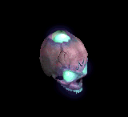 | 能力向上2(80) | 職業鎧(140) | 牙(250) | 職業鎧(360) | ステッキ(470) | イベント(550) | 双剣(250) | ||
| バイキングヘッド3 Zin | アンデット | ボス2 | |||||||
| 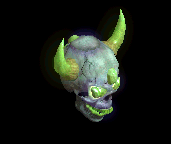 | 能力向上2(270) | 鈍器(450) | 牙(810) | 職業鎧(1170) | ステッキ(1530) | 杖(1800) | 本(1800) | 双剣(810) | |
| アンデッド魔法師3 Zin | アンデット | セミ2 | |||||||
 | 能力向上2(80) | マント(140) | cP回復(250) | 十字架(360) | 状態異常回復1(470) | イベント(550) | |||
| アンデッドメイジ3 Zin | アンデット | ボス2 | |||||||
 | 能力向上2(270) | マント(450) | 杖(810) | 能力向上1(1170) | 矢(1530) | 杖(1800) | 本(810) | 魔弾(1530) | |
| ボーンキメラ1 Zin | アンデット | セミ1 | |||||||
 | 能力向上2(50) | 状態異常回復2(90) | 帰還(160) | 能力向上2(230) | 槍投擲機(300) | イベント(350) | |||
| ブルーエリゲイト Zin | アンデット | 一般4 | |||||||
 | 片手剣(30) | 首(50) | 十字架(90) | 十字架(130) | 能力向上2(170) | 兜・帽子(200) | クロー(30) | ||
| 装甲ボーンキメラ2 Zin | アンデット | セミ3 | |||||||
 | 能力向上2(110) | 首(180) | 牙(320) | 十字架(460) | 槍投擲機(600) | 兜・帽子(700) | 双剣(320) | ||
| ハイエルフ2 Zin | 人間 | セミ2 | |||||||
| 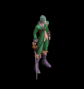 | 能力向上2(140) | 状態異常回復2(410) | 腕刺青(280) | 十字架(220) | 槍投擲機(60) | 兜・帽子(80) | |||
| エルフ貴族 Zin | 人間 | 一般4 | |||||||
 | 能力向上2(50) | イヤリング(150) | 足(100) | cP回復(80) | 能力向上2(20) | HP回復(30) | |||
| エルフ貴族1 Zin | 人間 | セミ2 | |||||||
 | 片手剣(140) | マント(410) | 能力向上2(280) | 槍(220) | 槍投擲機(60) | 兜・帽子(80) | クロー(140) | 箒(220) | |
| 襲撃団1 Zin | 人間 | セミ1 | |||||||
| 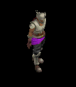 | 投擲(90) | 爪(260) | 牙(180) | 能力向上2(140) | 弓(40) | 盾(50) | 双剣(180) | 銃(40) | |
| ストリート戦士 Zin | 人間 | セミ2 | |||||||
| 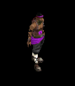 | 能力向上2(140) | マント(410) | 帰還(280) | 笛(220) | 弓(60) | 盾(80) | 銃(60) | ||
| シーク守護者1 Zin | 人間 | セミ1 | |||||||
 | 能力向上2(90) | 首(260) | スリング(180) | 手首(140) | 腰(40) | イベント(50) | |||
| シーク天使2 Zin | 人間 | セミ3 | |||||||
| 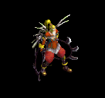 | 鍵(180) | マント(530) | スリング(350) | 能力向上2(280) | 状態異常回復1(70) | イベント(110) | |||
| 逃亡ハンター1 Zin | 人間 | セミ1 | |||||||
 | 能力向上2(90) | 鈍器(260) | 両手剣(180) | 鞭(140) | ステッキ(40) | 宝石(50) | 鎌(180) | ||
| ゴールデンマスク1 Zin | 悪魔 | セミ2 | |||||||
 | 能力向上2(360) | 爪(440) | 帰還(180) | 鞭(110) | 肩刺青(60) | 杖(30) | 本(30) | ||
| 剣闘士4 Zin | 悪魔 | ボス3 | |||||||
 | 能力向上2(1560) | 爪(1920) | スリング(790) | 十字架(480) | 状態異常回復1(240) | 兜・帽子(120) | |||
| 死神3 Zin | 悪魔 | ボス2 | |||||||
 | 能力向上2(1170) | 職業鎧(1440) | 両手剣(590) | 能力向上1(360) | 肩刺青(180) | グローブ(90) | 鎌(590) | ||
| サキュバス4 Zin | 悪魔 | ボス3 | |||||||
 | 能力向上2(1560) | イヤリング(1920) | 帰還(790) | マント(480) | 肩刺青(240) | 盾(120) | |||
| バッタ悪魔1 Zin | 悪魔 | セミ1 | |||||||
 | 能力向上2(230) | cP回復(280) | 弾(120) | 槍(70) | 状態異常回復1(40) | 翼(20) | 箒(70) | 水晶(20) | |
| ジャックランタン3 Zin | 悪魔 | ボス2 | |||||||
 | 能力向上2(1170) | 首(1440) | 帰還(590) | 笛(360) | 腰(180) | グローブ(90) | |||
| エルダーパンプキン4 Zin | 悪魔 | ボス3 | |||||||
 | 能力向上2(1560) | 首(1920) | cP回復(790) | 笛(480) | 腰(240) | グローブ(120) | |||
| ビッグモンキー1 Zin | 動物 | セミ1 | |||||||
 | 能力向上2(120) | ブローチ(90) | 腕刺青(70) | 職業鎧(50) | 状態異常回復1(40) | イベント(20) | |||
| ウィングコング Zin | 動物 | セミ1 | |||||||
| 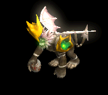 | 冠(120) | イヤリング(90) | 牙(70) | 能力向上2(50) | 肩刺青(40) | cP回復(20) | 双剣(70) | ||
| ウィングコング1 Zin | 動物 | セミ2 | |||||||
 | 杖(190) | イヤリング(140) | 能力向上2(110) | 職業鎧(80) | 矢(60) | 翼(30) | 本(190) | 水晶(30) | 魔弾(60) |
| ウィングコング3 Zin | 動物 | ボス2 | |||||||
 | 能力向上2(630) | 状態異常回復2(450) | 牙(360) | 職業鎧(270) | 矢(180) | 翼(90) | 双剣(360) | 水晶(90) | 魔弾(180) |
| カメレオン1 Zin | 動物 | セミ1 | |||||||
 | 能力向上2(120) | 状態異常回復2(90) | スリング(70) | 鞭(50) | 弓(40) | 盾(20) | 銃(40) | ||
| 装甲亀2 Zin | 動物 | セミ3 | |||||||
 | 能力向上2(250) | ブローチ(180) | 帰還(140) | 能力向上1(110) | 弓(70) | イベント(40) | 銃(70) | ||
| ダークバッファロ Zin | 神獣 | 一般3 | |||||||
 | 能力向上2(120) | 爪(170) | cP回復(90) | 能力向上1(10) | 腰(30) | イベント(70) | |||
| 赤パネルバッファ2 Zin | 神獣 | セミ3 | |||||||
 | 能力向上2(320) | 爪(460) | 帰還(250) | 鞭(40) | 腰(70) | イベント(180) | |||
| エメラルドバッファ1 Zin | 神獣 | セミ2 | |||||||
 | 指輪(250) | 爪(360) | 弾(190) | 十字架(30) | 能力向上2(60) | イベント(140) | |||
| ユニコーン2 Zin | 神獣 | ボス1 | |||||||
 | 能力向上2(450) | ブローチ(650) | 能力向上2(350) | 槍(50) | 弓(100) | 翼(250) | 箒(50) | 水晶(250) | 銃(100) |
| ペガサス3 Zin | 神獣 | ボス2 | |||||||
 | 能力向上2(810) | マント(1170) | 腕刺青(630) | 槍(90) | 肩刺青(180) | 翼(450) | 箒(90) | 水晶(450) | |
| ブルーウイング4 Zin | 神獣 | ボス3 | |||||||
 | 能力向上2(1080) | マント(1560) | 牙(840) | 十字架(120) | 弓(240) | イベント(600) | 双剣(840) | 銃(240) | |
| 使徒1 Zin | 神獣 | セミ1 | |||||||
 | 能力向上2(160) | 鈍器(230) | スリング(120) | 笛(20) | cP回復(40) | 盾(90) | |||
| 審判官 Zin | 神獣 | 一般4 | |||||||
 | 能力向上2(90) | 鈍器(130) | 帰還(70) | 笛(10) | 矢(20) | HP回復(50) | 魔弾(20) | ||
| 審判官4 Zin | 神獣 | ボス3 | |||||||
 | 能力向上2(1080) | 鈍器(1560) | スリング(840) | 笛(120) | 矢(240) | イベント(600) | 魔弾(240) | ||
| ウィークネス天使1 Zin | 神獣 | セミ2 | |||||||
 | 能力向上2(250) | ブローチ(360) | スリング(190) | 笛(30) | 矢(60) | 盾(140) | 魔弾(60) | ||
| イーグルヘッド3 Zin | 神獣 | ボス2 | |||||||
 | 投擲(810) | イヤリング(1170) | 足(630) | 鞭(90) | 能力向上2(180) | グローブ(450) | |||
| ライオンヘッド Zin | 神獣 | セミ1 | |||||||
 | 投擲(160) | イヤリング(230) | cP回復(120) | 能力向上2(20) | ステッキ(40) | イベント(90) | |||
| ライオンヘッド2 Zin | 神獣 | セミ3 | |||||||
 | 鍵(320) | イヤリング(460) | 宝石(250) | 手首(40) | 能力向上2(70) | グローブ(180) | |||
| 泥棒 | 人間 | 一般1 | |||||||
| 杖(410) | スリング(270) | 弾(410) | 腰(230) | 首(210) | 能力向上2(160) | 本(410) | ||
| 堕落魔術師 | 人間 | 一般3 | |||||||
| 杖(360) | スリング(240) | イベント(360) | マント(200) | 首(180) | 能力向上2(140) | 本(360) | ||
| 魔術師 | 人間 | セミ1 | |||||||
| 杖(390) | スリング(260) | 状態異常回復2(100) | 職業鎧(220) | 首(200) | 能力向上2(160) | 本(390) | ||
| 破壊術師 | 人間 | ボス1 | |||||||
| 杖(470) | スリング(310) | 弾(470) | 兜・帽子(260) | 首(240) | 能力向上2(190) | 本(470) | |||
| 泥棒 Ex | 人間 | 一般1 | |||||||
| 杖(410) | スリング(270) | 弾(410) | 腰(230) | 首(210) | 能力向上2(160) | 本(410) | ||
| 堕落魔術師 Ex | 人間 | 一般3 | |||||||
| 杖(360) | スリング(240) | イベント(360) | マント(200) | 首(180) | 能力向上2(140) | 本(360) | ||
| 魔術師 Ex | 人間 | セミ1 | |||||||
| 杖(450) | スリング(300) | 状態異常回復2(110) | 職業鎧(250) | 首(230) | 能力向上2(180) | 本(450) | ||
| 破壊術師 Ex | 人間 | ボス1 | |||||||
| 杖(1200) | スリング(800) | 弾(1200) | 兜・帽子(670) | 首(600) | 能力向上2(480) | 本(1200) | |||
| ワニ亀 | 動物 | 一般1 | |||||||
| ステッキ(410) | 杖(270) | 盾(410) | 鎧(230) | 冠(210) | 能力向上2(160) | 本(270) | ||
| 象亀 | 動物 | 一般2 | |||||||
| ステッキ(380) | 杖(250) | 状態異常回復2(100) | 鎧(210) | 冠(190) | 能力向上2(150) | 本(250) | ||
| 鎧亀 | 動物 | 一般3 | |||||||
| ステッキ(360) | 杖(240) | 盾(360) | 鎧(200) | 冠(180) | 能力向上2(140) | 本(240) | ||
| 神秘の亀 | 動物 | セミ1 | |||||||
| ステッキ(390) | 杖(260) | cP回復(390) | 鎧(220) | 冠(200) | 能力向上2(160) | 本(260) | |||
| 竜王亀 | 動物 | ボス1 | |||||||
| ステッキ(470) | 杖(310) | 盾(470) | 鎧(260) | 冠(240) | 能力向上2(190) | 本(310) | ||
| ワニ亀 Ex | 動物 | 一般1 | |||||||
| ステッキ(410) | 杖(270) | 盾(410) | 鎧(230) | 冠(210) | 能力向上2(160) | 本(270) | ||
| 象亀 Ex | 動物 | 一般2 | |||||||
| ステッキ(380) | 杖(250) | 状態異常回復2(100) | 鎧(210) | 冠(190) | 能力向上2(150) | 本(250) | ||
| 鎧亀 Ex | 動物 | 一般3 | |||||||
| ステッキ(360) | 杖(240) | 盾(360) | 鎧(200) | 冠(180) | 能力向上2(140) | 本(240) | ||
| 神秘の亀 Ex | 動物 | セミ1 | |||||||
| ステッキ(450) | 杖(300) | cP回復(450) | 鎧(250) | 冠(230) | 能力向上2(180) | 本(300) | |||
| 竜王亀 Ex | 動物 | ボス1 | |||||||
| ステッキ(1200) | 杖(800) | 盾(1200) | 鎧(670) | 冠(600) | 能力向上2(480) | 本(800) | ||
| クリスタルイカ | 動物 | セミ1 | |||||||
| 鞭(390) | スリング(260) | 弾(390) | 腰(220) | 手首(200) | 能力向上2(160) | ||||
| クリスタルイカ Ex | 動物 | セミ1 | |||||||
| 鞭(450) | スリング(300) | 弾(450) | 腰(250) | 手首(230) | 能力向上2(180) | ||||
| ゴルゴン Zin | 神獣 | 一般4 | |||||||
| 能力向上2(120) | 爪(170) | cP回復(90) | 能力向上1(10) | 腰(30) | イベント(70) | |||
| アーカン Zin | 神獣 | 一般4 | |||||||
| 能力向上2(90) | 鈍器(130) | 帰還(70) | 笛(10) | 矢(20) | HP回復(50) | 魔弾(20) | ||
| ゴルゴン Zin | 神獣 | 一般4 | |||||||
| 能力向上2(120) | 爪(170) | cP回復(90) | 能力向上1(10) | 腰(30) | イベント(70) | |||
| ビッグシェルEv | 動物 | 一般3 | |||||||
| ステッキ(1560) | 杖(1040) | 盾(1560) | 鎧(870) | 冠(780) | 能力向上2(620) | 本(1040) | ||
| リザードチャージEv | 悪魔 | 一般3 | |||||||
| ステッキ(1560) | 槍(1040) | イベント(1560) | 職業鎧(870) | 首(780) | 能力向上2(620) | 箒(1040) | |||
| 包帯人間Ev | アンデット | 一般3 | |||||||
| 槍(1560) | 杖(1040) | 矢(1560) | 腰(870) | 手首(780) | 能力向上2(620) | 本(1040) | 箒(1560) | 魔弾(1560) | |
| ブレイジャーEv | 神獣 | 一般3 | |||||||
| スリング(1560) | 牙(1040) | 弾(1560) | グローブ(870) | 手首(780) | 能力向上2(620) | 双剣(1040) | ||
| 堕落魔法師Ev | 人間 | 一般3 | |||||||
| 杖(1560) | スリング(1040) | イベント(1560) | マント(870) | 首(780) | 能力向上2(620) | 本(1560) | ||
| ラットシーフEv | 悪魔 | 一般4 | |||||||
| 投擲(1200) | ステッキ(800) | 矢(1200) | 足(670) | 槍投擲機(600) | 能力向上2(480) | 魔弾(1200) | ||
| リザードトルーパEv | 悪魔 | 一般4 | |||||||
| ステッキ(1200) | 弓(800) | 矢(1200) | 職業鎧(670) | 首(600) | 能力向上2(480) | 銃(800) | 魔弾(1200) | |
| エンバームドEv | アンデット | 一般4 | |||||||
| 槍(1200) | 鞭(800) | 状態異常回復1(1200) | 腰(670) | 手首(600) | 能力向上2(480) | 箒(1200) | ||
| トライアングルEv | 動物 | セミ1 | |||||||
| ステッキ(650) | 杖(430) | cP回復(650) | 鎧(360) | 冠(330) | 能力向上2(260) | 本(430) | |||
| 火炎悪魔Ev | 神獣 | ボス1 | |||||||
| スリング(1000) | 牙(670) | 弾(1000) | グローブ(560) | 手首(500) | 能力向上2(400) | 双剣(670) | ||
| 淡水亀Sp | 動物 | 一般4 | |||||||
| ステッキ(700) | 杖(600) | 盾(500) | 鎧(900) | 冠(500) | 能力向上2(400) | 本(700) | ||
| ブルーエリゲイト4 Sp | アンデット | セミ1 | |||||||
 | 片手剣(300) | 首(500) | 十字架(900) | 能力向上2(500) | 兜・帽子(1000) | クロー(1100) | |||
| 覚醒ボーンキメラZin | アンデット | セミ1 | |||||||
 | 能力向上2(50) | 状態異常回復2(90) | 帰還(160) | 能力向上2(230) | 槍投擲機(300) | イベント(350) | |||
| 覚醒逃亡ハンターZin | 人間 | セミ1 | |||||||
 | 能力向上2(90) | 鈍器(260) | 両手剣(180) | 鞭(140) | ステッキ(40) | 宝石(50) | 鎌(180) |